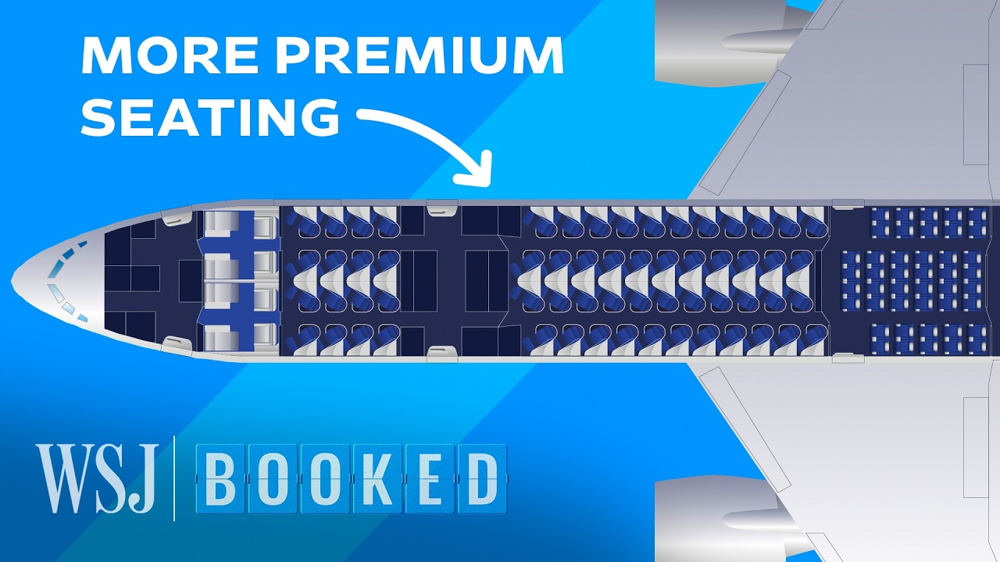

来B站一起耍【Global每日英语简报】
【为什么航空公司斥资数十亿美元增加头等舱航班 | WSJ Booked】
Summary: Airlines are investing heavily in premium cabins to attract wealthy travelers, as business travel remains below pre-pandemic levels, despite risks like reduced economy seating and long lead times for new planes.
摘要： 航空公司正大力投资高端客舱以吸引富裕旅客，尽管商务旅行仍未恢复至疫情前水平，但此举存在减少经济舱座位和新飞机交付周期长等风险。

⏱️ Estimated Reading Time: 11 min
This cabin costs at least $11,000 for a round trip flight from New York to Paris.
这间客舱的纽约至巴黎往返航班票价至少为11,000美元。
These first-class seats were renovated as part of a $550 million investment to upgrade Air France's existing planes and lounges.
这些头等舱座位是法航耗资5.5亿美元升级现有飞机和贵宾室的一部分。
They're part of a massive race by airlines across the world to build the most exclusive and high-end cabins for passengers willing to pay top dollar.
这是全球航空公司为愿意支付高额费用的乘客打造最奢华高端客舱的激烈竞争的一部分。
What's been this kind of incredible tailwind for the aviation industry is the amount of money that regular leisure passengers are willing to spend on their products.
推动航空业的惊人助力在于普通休闲旅客愿意为其产品支付的金额。
Especially because business travel has not returned to pre-COVID levels, airlines are trying to make up for the gap by winning over wealthy vacationers.
由于商务旅行尚未恢复至疫情前水平，航空公司正试图通过吸引富裕度假者来弥补这一缺口。
But competing for this business comes with some big risks.
但争夺这部分业务存在重大风险。
Chasing rich customers means sacrificing space that could be filled by many more economy passengers.
追逐富裕客户意味着牺牲可容纳更多经济舱乘客的空间。
And since the waitlists for new planes and components stretch years, airlines have to commit to a seat layout far in advance and invest hundreds of millions of dollars all at a time of increasing economic uncertainty.
由于新飞机和零部件的等待期长达数年，航空公司必须提前确定座位布局，并在经济不确定性加剧时一次性投入数亿美元。
The prevailing wisdom is that economy seats are there to subsidize the cost of flying.
普遍观点认为经济舱座位用于补贴飞行成本。
Premier seats and premium seats are there to actually make money.
而头等舱和商务舱座位才是真正盈利的来源。
First-class cabins are important for maintaining a small number of top-tier customers, offering an upgrade option to business-class travelers who might be willing to splurge, and trying to find new customers among the increasing number of people who fly private.
头等舱对于维护少量顶级客户至关重要，既为可能愿意挥霍的商务舱旅客提供升级选择，也试图在日益增长的私人飞机乘客中寻找新客户。
Premium seats are significantly more profitable per square foot than economy seats according to past airline reports.
根据以往航空公司报告，高端座位每平方英尺的利润远高于经济舱。
And carriers can charge significantly more for business- and first-class seats.
航空公司对商务舱和头等舱座位的收费也高得多。
Many airlines would prefer to replace economy seats with higher-class seating.
许多航空公司更倾向于用高级座位取代经济舱。
The question is how much can they upsell people, and how much to deprioritize the economy section to make room for those larger seats.
问题在于他们能向乘客推销多少升级服务，以及需要多大程度弱化经济舱来为更宽敞的座位腾出空间。
Air France is billing its new 38-square foot La Premiere cabins with five windows each, as the longest first-class on the market, though some competitors offer more space overall.
法航将其配有五扇窗户、38平方英尺的新La Premiere客舱宣传为市场上最长的头等舱，尽管部分竞争对手提供更大的整体空间。
Some Emirates first-class cabins are 40 square feet, which is smaller than many Singapore Airlines cabins which are 50 square feet, let alone Etihad's 125-square foot residence.
阿联酋航空部分头等舱为40平方英尺，小于新加坡航空许多50平方英尺的客舱，更不用说阿提哈德航空125平方英尺的"空中官邸"。
We have people that are flying because they don't like the optics of a private jet.
有些乘客选择我们是因为不喜欢私人飞机的张扬形象。
And then we have some people now that like the product so much that, you know, they actually buy four seats just for one person 'cause they want to have that full privacy; and they find it better than actually taking a a private jet.
还有些人非常喜欢这个产品，他们会为一个人购买四个座位以获得完全隐私，甚至觉得比乘坐私人飞机更好。
Airlines just have to figure out how many customers actually exist for these seats.
航空公司只需弄清楚这类座位的实际客户有多少。
Economy passengers can often go round trip from New York to Paris for less than $1,000; it's one thing to upsell them to premium for a $2,000 round trip, but another to get them to pay at least $11,000, often much more, for a trip that's only seven and a half hours each way.
经济舱乘客通常可以不到1,000美元的价格往返纽约和巴黎；说服他们花2,000美元升级至高端舱位是一回事，但让他们为单程仅7.5小时的旅程支付至少11,000美元（往往更高）则是另一回事。
While some airlines like Emirates have built their reputations around first-class travel and carry thousands of first-class passengers a day, other traditional airlines can't count on that level of high-spending traffic.
虽然阿联酋航空等公司以头等舱服务闻名，每天运送数千名头等舱乘客，但其他传统航空公司无法依赖这种高消费客流量。
So many airlines only put first-class cabins on specific routes.
因此许多航空公司仅在特定航线设置头等舱。
For instance, on Air France flights to the Caribbean, it uses a layout like this, which has 472 seats.
例如法航飞往加勒比海的航班采用这种布局，设有472个座位。
For the same planes that go between New York and Paris. It often chooses this layout with only 312 seats, 160 less to make room for more premium cabins.
而执飞纽约至巴黎航线的同款飞机通常选择仅设312个座位的布局，减少160个座位以容纳更多高端客舱。
For some traditional airlines, the changes are a correction to years of trying to compete with budget carriers like Spirit and EasyJet.
对一些传统航空公司而言，这些改变是对多年来试图与Spirit和易捷航空等廉价航空公司竞争的修正。
The airline business is pretty ruthless. It's a very competitive market. Margins are kind of famously thin.
航空业相当残酷，市场竞争激烈，利润率之低众所周知。
The global aviation industry has about $900 billion in annual expenses, largely fuel, labor, equipment, and various overhead costs.
全球航空业年支出约9000亿美元，主要包括燃料、人力、设备和各类运营成本。
Most of these are borne by traditional airlines that have larger staffs and more complex logistics.
其中大部分由员工规模更大、后勤更复杂的传统航空公司承担。
Meanwhile, the industry saw net profits last year of just about $32 billion, or about $7 per passenger.
而去年行业净利润仅约320亿美元，相当于每位乘客7美元。
To stay in the black, full-service carriers have had to trim amenities and streamline operations.
为保持盈利，全服务航空公司不得不削减设施并精简运营。
Now some are trying to shift strategies to cut their economy sections and focus on passengers willing to pay more.
现在部分公司正尝试转变策略，缩减经济舱并聚焦愿意支付更高费用的乘客。
For Air France, that meant flying smaller planes that it didn't have to fill with so many passengers, which also meant it could fly more people directly to their final destinations rather than make everyone connect through Paris.
对法航而言，这意味着改用不必搭载过多乘客的小型飞机，从而让更多旅客直飞目的地而无需经巴黎中转。
We have gradually been reducing the average size of our long-haul fleet; not necessarily to make up for bigger premium cabins, but to lower the dependency on connecting and lower price travel.
我们逐步缩小远程机队的平均规模，主要目的并非为更大高端客舱腾空间，而是降低对中转和低价旅行的依赖。
But it's unclear if the strategy to go premium will pay off in the long run.
但尚不清楚高端化战略能否长期奏效。
First off, it's expensive. Air France is spending about $1.1 billion per year to renew its fleet.
首先成本高昂，法航每年花费约11亿美元更新机队。
And the new planes it's buying, like the Airbus A350, have list prices of more than $300 million each.
其采购的空客A350等新飞机目录价超过3亿美元每架。
And then there are the soft amenities. Airlines are ordering more caviar and champagne, hiring Michelin chefs to design their menus, and teaming up with luxury designers to make custom in-flight pajamas.
此外还有软性服务：航空公司订购更多鱼子酱和香槟，聘请米其林厨师设计菜单，联手奢侈品牌定制机上睡衣。
The renovations are also taking a long time to execute, which means companies are betting large sums and spending years pursuing strategies that could backfire.
改造工程耗时漫长，意味着企业正投入巨资并花费数年实施可能适得其反的战略。
So we made the strategic decision to invest in a new La Premiere six years ago.
因此我们六年前就做出了投资新La Premiere的战略决策。
Then it was designing the seat, finding the suppliers, developing the seat, and then it was certifying.
接着是设计座椅、寻找供应商、开发产品，最后是认证流程。
So certifying took a long time because it's not just certifying the whole seat: there's fire testing, there's, you know, making sure it's not too heavy, not too light, durability testing.
认证耗时约三年半，因为不仅涉及整体座椅认证，还包括防火测试、重量平衡测试和耐久性测试等。
This means that companies have to set priorities far in advance, and then hope they've correctly predicted where the market is headed.
这意味着企业必须提前很久确定优先事项，并希望准确预测市场走向。
You've got a bunch of airlines all coming out of the pandemic, all wanting to invest in brand new seats to differentiate their offerings.
众多航空公司走出疫情后，都希望通过投资全新座椅来差异化自身服务。
And that's part of what we're seeing in terms of the delays, is it just takes a lot of time to get through the bureaucracy, essentially, of getting these seats ready and fitted and safety-approved.
这也是当前出现延误的部分原因——完成这些座椅的准备、安装和安全审批的行政流程本就耗时良久。
But for some companies there are few alternatives, and the risk is worth the investment.
但对部分公司而言别无选择，且风险值得投资。
And based on Air France's current data, high-revenue air travelers aren't downgrading anytime soon.
根据法航当前数据，高收益航空旅客短期内不会降级消费。
Travel is one of the first things to be affected when prices go up or there's uncertainty or there's instability in parts of the world.
当价格上涨或部分地区出现不确定性或不稳定时，旅行是最先受影响的领域之一。
You know, what we're seeing though is luxury travel seems to be very resilient.
但我们观察到豪华旅行似乎极具韧性。
We don't see this as, okay, we're gonna reevaluate this every few years. This is a product we believe will stay part of our offering, you know, for the long term.
我们不打算每隔几年重新评估，而是相信该产品将长期存在于我们的服务中。
It's a really interesting time, because we're starting to see cracks in the global economy.
当前是非常有趣的时期，因为全球经济开始出现裂痕。
And it's not quite clear whether this hyperexpensive luxury travel that they're kind of betting on is really gonna last.
尚不确定他们押注的超级奢华旅行能否持续。